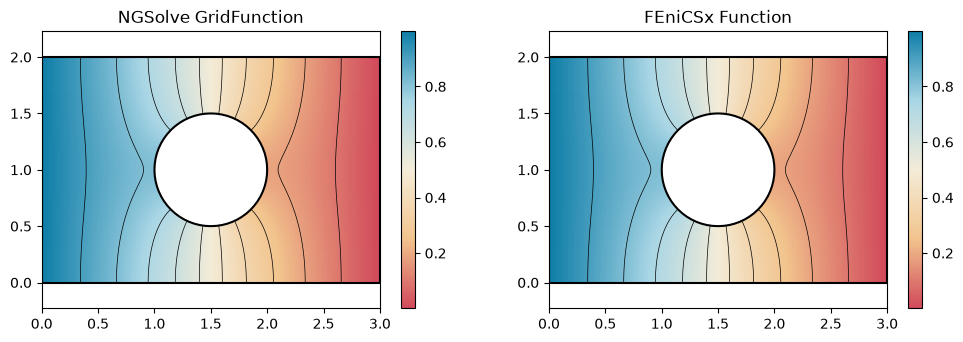
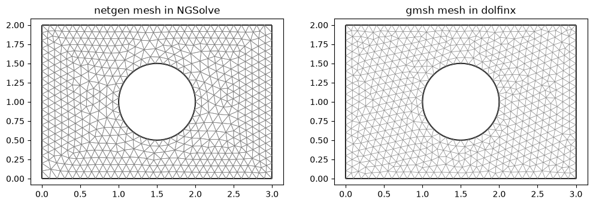
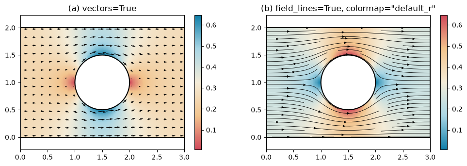
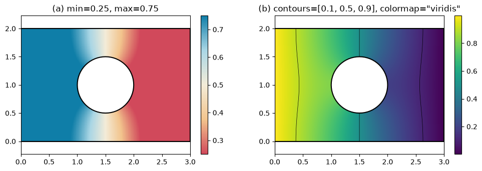

Fields
px.PlotField draws a simulation result on the planex2d geometry it was computed on, with colors over the faces, contour lines, arrows and field lines. The call is the same for every solver: an NGSolve GridFunction or CoefficientFunction and a FEniCSx Function are drawn alike, and px.PlotMesh draws the mesh of either. Every pixel shows the field at its own point, evaluated by the solver, and only where both the face and the mesh are present. The outlines are the exact edges of
the geometry, not the edges of the mesh.
See NGSolve for fields on curved meshes and cuts through 3D results, and gmsh and FEniCSx for a dolfinx mesh made by gmsh, with the edge names as physical groups. The airplane windows example draws the stress around windows of four shapes.
[1]:
import os
import tempfile
import matplotlib.pyplot as plt
import ngsolve as ngs
import gmsh
import ufl
import dolfinx
from dolfinx import fem
from dolfinx.fem.petsc import LinearProblem
from dolfinx.io import gmsh as gmshio
from mpi4py import MPI
import planex as px
One plate, two solvers
The example is a plate of 3 × 2 with a hole of radius 0.5, held at 1 on its left edge hot and at 0 on its right edge cold, while the other edges are insulated. The edges carry these names into both meshes, so both solvers set their boundary values by name. Each solver solves Laplace’s equation with second-order elements, and the two results are compared by their conductance G, the integral of |∇u|².
[3]:
s = px.QuickSketch().Line(3, name="wall").Line(0, 2, name="cold")
s.Line(-3, 0, name="wall").Close(name="hot").Circle(1.5, 1, 0.5, name="wall")
plate = s.Face()
netgen meshes the plate through px.OCCGeometry, and NGSolve solves on the curved mesh:
[4]:
mesh = ngs.Mesh(px.OCCGeometry(plate).GenerateMesh(maxh=0.1))
mesh.Curve(2)
fes = ngs.H1(mesh, order=2, dirichlet="hot|cold")
u, v = fes.TnT()
a = ngs.BilinearForm(ngs.grad(u) * ngs.grad(v) * ngs.dx).Assemble()
gf = ngs.GridFunction(fes)
gf.Set(mesh.BoundaryCF({"hot": 1, "cold": 0}), ngs.BND)
gf.vec.data += a.mat.Inverse(fes.FreeDofs()) * (-a.mat * gf.vec)
G_ngsolve = ngs.Integrate(ngs.grad(gf) * ngs.grad(gf), mesh)
For FEniCSx, WriteGeo writes the plate as a gmsh .geo file, with the edge names as physical groups. gmsh meshes it, and dolfinx solves on that mesh:
[5]:
geo = os.path.join(tempfile.mkdtemp(), "plate.geo")
plate.WriteGeo(geo)
gmsh.initialize()
gmsh.option.setNumber("General.Terminal", 0)
gmsh.open(geo)
gmsh.option.setNumber("Mesh.MeshSizeMax", 0.1)
gmsh.model.mesh.generate(2)
gmsh.model.mesh.setOrder(2)
data = gmshio.model_to_mesh(gmsh.model, MPI.COMM_WORLD, 0, gdim=2)
gmsh.finalize()
V = fem.functionspace(data.mesh, ("Lagrange", 2))
bcs = []
for name, value in (("hot", 1.0), ("cold", 0.0)):
dofs = fem.locate_dofs_topological(V, 1, data.facet_tags.find(data.physical_groups[name].tag))
bcs.append(fem.dirichletbc(dolfinx.default_scalar_type(value), dofs, V))
p, q = ufl.TrialFunction(V), ufl.TestFunction(V)
zero = fem.Constant(data.mesh, dolfinx.default_scalar_type(0)) * q * ufl.dx
uh = LinearProblem(ufl.inner(ufl.grad(p), ufl.grad(q)) * ufl.dx, zero, bcs=bcs, petsc_options_prefix="plate_",
petsc_options={"ksp_type": "preonly", "pc_type": "lu"}).solve()
G_fenicsx = fem.assemble_scalar(fem.form(ufl.inner(ufl.grad(uh), ufl.grad(uh)) * ufl.dx))
print("G NGSolve", G_ngsolve, "FEniCSx", G_fenicsx)
print("relative difference", abs(G_ngsolve - G_fenicsx) / G_fenicsx)
G NGSolve 0.5014528302103062 FEniCSx 0.5014497411556131
relative difference 6.160247856386737e-06
The same call draws both results, each with ten contour lines:
[6]:
fig, (left, right) = plt.subplots(1, 2, figsize=(12, 3.6))
px.PlotField(gf, plate, ax=left, contours=10)
px.PlotField(uh, plate, ax=right, contours=10)
left.set_title("NGSolve GridFunction")
right.set_title("FEniCSx Function");

px.PlotMesh draws the two meshes over the plate, netgen’s mesh curved along the hole and gmsh’s mesh in dolfinx:
[7]:
fig, (left, right) = plt.subplots(1, 2, figsize=(12, 3.6))
px.PlotMesh(mesh, plate, ax=left, legend=False)
px.PlotMesh(data.mesh, plate, ax=right, legend=False)
left.set_title("netgen mesh in NGSolve")
right.set_title("gmsh mesh in dolfinx");

Vectors, field lines and colors
A vector field is drawn as its magnitude, and vectors and field_lines add its direction. The example is the heat flux −∇u from NGSolve, a CoefficientFunction, so the mesh to evaluate it on is passed as well. It is drawn with arrows (a), and with field lines and reversed colors (b). The flux crowds past the hole.
[8]:
flux = -ngs.grad(gf)
fig, (left, right) = plt.subplots(1, 2, figsize=(12, 3.6))
px.PlotField(flux, mesh, plate, ax=left, vectors=True)
px.PlotField(flux, mesh, plate, ax=right, field_lines=True, colormap="default_r")
left.set_title("(a) vectors=True")
right.set_title('(b) field_lines=True, colormap="default_r"');

min and max set the color range, as in NGSolve’s Draw, and values outside it take the end colors. contours also takes a list of levels, and colormap takes any matplotlib name. The example draws the FEniCSx result with a narrower color range (a), and with three chosen levels in viridis (b).
[9]:
fig, (left, right) = plt.subplots(1, 2, figsize=(12, 3.6))
px.PlotField(uh, plate, ax=left, min=0.25, max=0.75)
px.PlotField(uh, plate, ax=right, contours=[0.1, 0.5, 0.9], colormap="viridis")
left.set_title("(a) min=0.25, max=0.75")
right.set_title('(b) contours=[0.1, 0.5, 0.9], colormap="viridis"');

Options
|
|
|---|---|
|
An NGSolve |
|
The mesh to evaluate a |
|
The planex2d object whose faces are colored, or a plane that cuts a 3D mesh. |
|
|
|
n levels inside the color range, or a list of levels. |
|
Arrows, or field lines ( |
|
The color range and the colors: |
|
The number of pixels along the longer side (default 400). |
|
As for |